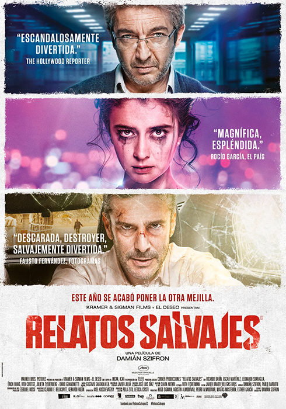

RELATOS SALVAJES (2014)
Seis relatos que alternan la intriga, la comedia y la violencia. Sus personajes se verán empujados hacia el abismo y hacia el innegable placer de perder el control al cruzar la delgada línea que separa la civilización de la barbarie.
Ver Trailer